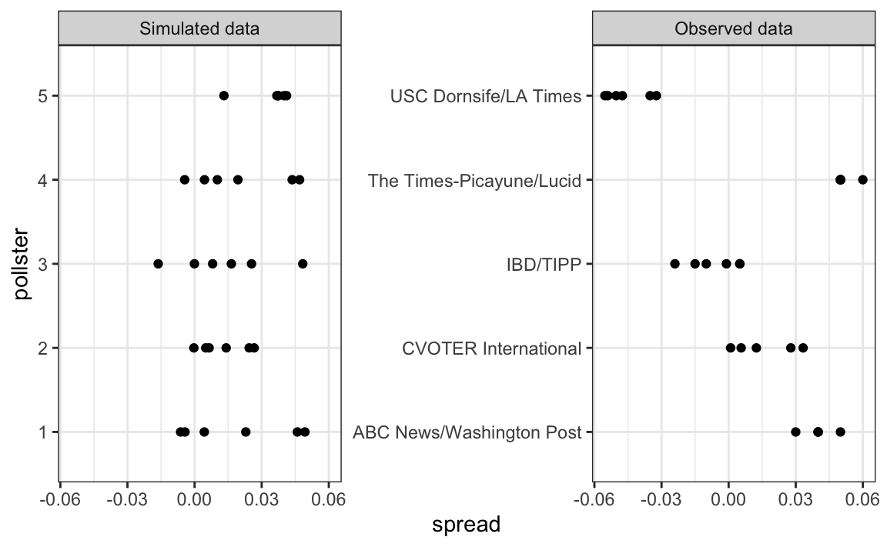
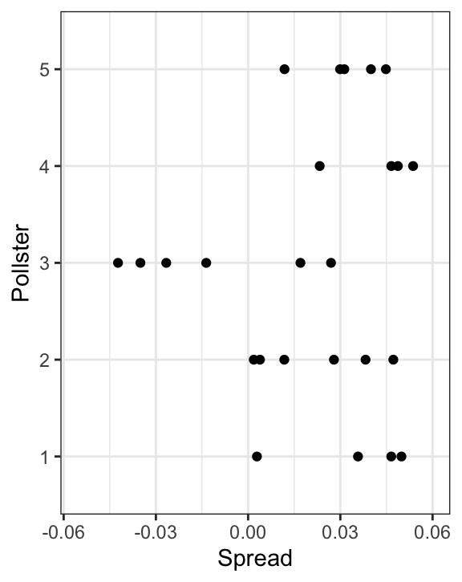

| NYT | 538 | HuffPost | PW | PEC | DK | Cook | Roth | |
|---|---|---|---|---|---|---|---|---|
| Win Prob | 85% | 71% | 98% | 89% | >99% | 92% | Lean Dem | Lean Dem |
13 Hierarchichal Models
Hierarchical models are useful for quantifying different levels of variability or uncertainty. One can use them using a Bayesian or Frequentist framework. However, because in the Frequentist framework they often extend a model with a fixed parameter by assuming the parameter is actually random, the model description includes two distributions that look like the prior and a sampling distribution used in the Bayesian framework. This makes the resulting summaries very similar or even equal to what is obtained with a Bayesian context. A key difference between the Bayesian and the Frequentist hierarchical model approach is that, in the latter, we use data to construct priors rather than treat priors as a quantification of prior expert knowledge. In this section, we illustrate the use of hierarchical models with an example from sports, in which dedicated fans intuitively apply the ideas of hierarchical models to manage expectations when a new player is off to an exceptionally good start.
13.1 Case study: election forecasting
Since the 2008 elections, organizations other than FiveThirtyEight have started their own election forecasting groups that also aggregate polling data and uses statistical models to make predictions. However, in 2016, forecasters underestimated Trump’s chances of winning greatly. The day before the election, the New York Times reported1 the following probabilities for Hillary Clinton winning the presidency:
Meanwhile, the Princeton Election Consortium (PEC) gave Trump less than 1% chance of winning, while the Huffington Post gave him a 2% chance. In contrast, FiveThirtyEight had Trump’s probability of winning at 29%, substantially higher than the others. In fact, four days before the election, FiveThirtyEight published an article titled Trump Is Just A Normal Polling Error Behind Clinton2.
So why did FiveThirtyEight’s model fair so much better than others? How could PEC and Huffington Post get it so wrong if they were using the same data? In this chapter, we describe how FiveThirtyEight used a hierarchical model to correctly account for key sources of variability and outperform all other forecasters. For illustrative purposes, we will continue examining our popular vote example. In the final section, we will describe the more complex approach used to forecast the electoral college result.
13.2 The general bias
In the previous chapter, we computed the posterior probability of Hillary Clinton winning the popular vote with a standard Bayesian analysis and found it to be very close to 100%. However, FiveThirtyEight gave her a 81.4% chance3. What explains this difference? Below, we describe the general bias, another source of variability, included in the FiveThirtyEight model, that accounts for the difference.
After elections are over, one can look at the difference between the pollster predictions and the actual result. An important observation, that our initial models did not take into account, is that it is common to see a general bias that affects most pollsters in the same way, making the observed data correlated. There is no agreed upon explanation for this, but we do observe it in historical data: in one election, the average of polls favors Democrats by 2%; then in the following election, they favor Republicans by 1%; then in the next election there is no bias; then in the following one Republicans are favored by 3%, and so on. In 2016, the polls were biased in favor of the Democrats by 1-2%.
Although we know this bias term affects our polls, we have no way of knowing what this bias is until election night. So we can’t correct our polls accordingly. What we can do is include a term in our model that accounts for the variability.
13.3 Mathematical representations of the hierarchical model
Suppose we are collecting data from one pollster and we assume there is no general bias. The pollster collects several polls with a sample size of \(N\), so we observe several measurements of the spread \(X_1, \dots, X_J\). Suppose the real proportion for Hillary is \(p\) and the difference is \(\mu\). The urn model theory tells us that these random variables are normally distributed, with expected value \(\mu\) and standard error \(2 \sqrt{p(1-p)/N}\):
\[ X_j \sim \mbox{N}\left(\mu, 2\sqrt{p(1-p)/N}\right) \]
We use the index \(j\) to represent the different polls conducted by this pollster. Below is a simulation for six polls assuming the spread is 2.1 and \(N\) is 2,000:
Now, suppose we have \(J=6\) polls from each of \(I=5\) different pollsters. For simplicity, let’s say all polls had the same sample size \(N\). The urn model tell us the distribution is the same for all pollsters, so to simulate data, we use the same model for each:
As expected, the simulated data does not really seem to capture the features of the actual data because it does not account for pollster-to-pollster variability:

To fix this, we need to represent the two levels of variability and we need two indexes, one for pollster and one for the polls each pollster takes. We use \(X_{ij}\) with \(i\) representing the pollster and \(j\) representing the \(j\)-th poll from that pollster. The model is now augmented to include pollster effects \(h_i\), referred to as “house effects” by FiveThirtyEight, with standard deviation \(\sigma_h\):
\[ \begin{aligned} h_i &\sim \mbox{N}\left(0, \sigma_h\right)\\ X_{i,j} \mid h_i &\sim \mbox{N}\left(\mu + h_i, \sqrt{p(1-p)/N}\right) \end{aligned} \]
To simulate data from a specific pollster, we first need to draw an \(h_i\), and then generate individual poll data after adding this effect. Here is how we would do it for one specific pollster. We assume \(\sigma_h\) is 0.025:
The simulated data now looks more like the actual data:

Note that \(h_i\) is common to all the observed spreads from a specific pollster. Different pollsters have a different \(h_i\), which explains why we can see the groups of points shift up and down from pollster to pollster.
Now, in the model above, we assume the average house effect is 0. We think that for every pollster biased in favor of our party, there is another one in favor of the other, and assume the standard deviation is \(\sigma_h\). But, historically, we see that every election has a general bias affecting all polls. We can observe this with the 2016 data, but if we collect historical data, we see that the average of polls misses by more than models like the one above predict. To see this, we would take the average of polls for each election year and compare it to the actual value. If we did this, we would see a difference with a standard deviation of between 2-3%. To account for this variability we can add another level to the model as follows:
\[ \begin{aligned} b &\sim \mbox{N}\left(0, \sigma_b\right)\\ h_j \mid \, b &\sim \mbox{N}\left(b, \sigma_h\right)\\ X_{i,j} | \, h_j, b &\sim \mbox{N}\left(\mu + h_j, \sqrt{p(1-p)/N}\right) \end{aligned} \]
This model accounts for three levels of variability: 1) variability in the bias observed from election to election, quantified by \(\sigma_b\), 2) pollster-to-pollster or house effect variability, quantified by \(\sigma_h\), and 3) poll sampling variability, which we can derive to be \(\sqrt(p(1-p)/N)\).
Note that not including a term like \(b\) in the models is what led many forecasters to be overconfident. This random variable changes from election to election, but for any given election, it is the same for all pollsters and polls within one election (note it does not have an index). This implies that we can’t estimate \(\sigma_h\) with data from just one election. It also implies that the random variables \(X_{i,j}\) for a fixed election year share the same \(b\) and are therefore correlated.
One way to interpret \(b\) is as the difference between the average of all polls from all pollsters and the actual result of the election. Since we don’t know the actual result until after the election, we can’t estimate \(b\) until then.
13.4 Computing a posterior probability
Some of the results presented in this section rely on calculations of the statistical properties of summaries based on correlated random variables. To learn about the related mathematical details we skip in this book, please consult a textbook on hierarchical models.
Now, let’s fit the model above to data. We will use the same data used in the previous chapters and saved in one_poll_per_pollster.
Here, we have just one poll per pollster, so we will drop the \(j\) index and represent the data as before with \(X_1, \dots, X_I\). As a reminder, we have data from \(I=15\) pollsters. Based on the model assumptions described above, we can mathematically show that the average \(\bar{X}\):
x_bar <- mean(one_poll_per_pollster$spread)has expected value \(\mu\); thus, it provides an unbiased estimate of the outcome of interest. But how precise is this estimate? Can we use the observed sample standard deviation to construct an estimate of the standard error of \(\bar{X}\)?
It turns out that, because the \(X_i\) are correlated, estimating the standard error is more complex than what we have described up to now. Specifically, using advanced statistical calculations not shown here, we can show that the typical variance (standard error squared) estimate:
will consistently underestimate the true standard error by about \(\sigma_b^2\). And, as mentioned earlier, to estimate \(\sigma_b\), we need data from several elections. By collecting and analyzing polling data from several elections, FiveThirtyEight estimates this variability and finds that \(\sigma_b \approx 0.025\). We can therefore greatly improve our standard error estimate by adding this quantity:
sigma_b <- 0.025
se <- sqrt(s2 + sigma_b^2)If we redo the Bayesian calculation taking this variability into account, we obtain a result much closer to FiveThirtyEight’s:
Notice that by accounting for the general bias term, our Bayesian analysis now produces a posterior probability similar to that reported by FiveThirtyEight.
Keep in mind that we are simplifying FiveThirtyEight’s calculations related to the general bias \(b\). For example, one of the many ways their analysis is more complex than the one presented here is that FiveThirtyEight permits \(b\) to vary across regions of the country. This helps because, historically, we have observed geographical patterns in voting behaviors.
13.5 Predicting the electoral college
Up to now, we have focused on the popular vote. However, in the United States, elections are not decided by the popular vote but rather by what is known as the electoral college. Each state gets a number of electoral votes that depends, in a somewhat complex way, on the population size of the state. Here are the top 5 states ranked by electoral votes in 2016:
results_us_election_2016 |> top_n(5, electoral_votes)
#> state electoral_votes clinton trump others
#> 1 California 55 61.7 31.6 6.7
#> 2 Texas 38 43.2 52.2 4.5
#> 3 Florida 29 47.8 49.0 3.2
#> 4 New York 29 59.0 36.5 4.5
#> 5 Illinois 20 55.8 38.8 5.4
#> 6 Pennsylvania 20 47.9 48.6 3.6With some minor exceptions we won’t discuss, the electoral votes are won on an all-or-nothing basis. For example, if you won California in 2016 by just 1 vote, you still get all 55 of its electoral votes. This means that by winning a few big states by a large margin, but losing many small states by small margins, you can win the popular vote and yet lose the electoral college. This happened in 1876, 1888, 2000, and 2016. The idea behind this is to prevent a few large states from having the power to dominate the presidential election.
Many people in the US consider the electoral college unfair and would like to see it abolished in favor of the popular vote.
We are now ready to predict the electoral college result for 2016. We start by aggregating results from a poll taken during the last week before the election. We use the grepl, which finds strings in character vectors, to remove polls that are not for entire states.
results <- polls_us_election_2016 |>
filter(state != "U.S." &
!grepl("CD", state) &
enddate >= "2016-10-31" &
(grade %in% c("A+","A","A-","B+") | is.na(grade))) |>
mutate(spread = rawpoll_clinton/100 - rawpoll_trump/100) |>
group_by(state) |>
summarize(avg = mean(spread), sd = sd(spread), n = n()) |>
mutate(state = as.character(state))Here are the five closest races according to the polls:
results |> arrange(abs(avg))
#> # A tibble: 47 × 4
#> state avg sd n
#> <chr> <dbl> <dbl> <int>
#> 1 Florida 0.00356 0.0163 7
#> 2 North Carolina -0.0073 0.0306 9
#> 3 Ohio -0.0104 0.0252 6
#> 4 Nevada 0.0169 0.0441 7
#> 5 Iowa -0.0197 0.0437 3
#> # ℹ 42 more rowsWe now introduce the command left_join that will let us easily add the number of electoral votes for each state from the dataset us_electoral_votes_2016. Here, we simply say that the function combines the two datasets so that the information from the second argument is added to the information in the first:
results <- left_join(results, results_us_election_2016, by = "state")Notice that some states have no polls because the winner is pretty much known:
No polls were conducted in DC, Rhode Island, Alaska, and Wyoming because Democrats are sure to win in the first two and Republicans in the last two.
Because we can’t estimate the standard deviation for states with just one poll, we will estimate it as the median of the standard deviations estimated for states with more than one poll:
To make probabilistic arguments, we will use a Monte Carlo simulation. For each state, we apply the Bayesian approach to generate an election day \(\mu\). We could construct the priors for each state based on recent history. However, to keep it simple, we assign a prior to each state that assumes we know nothing about what will happen. Given that results from a specific state don’t vary significantly from election year to election year, we will assign a standard deviation of 2% or \(\tau=0.02\). For now, we will assume, incorrectly, that the poll results from each state are independent. The code for the Bayesian calculation under these assumptions looks like this:
mu <- 0
tau <- 0.02
results |> mutate(sigma = sd/sqrt(n),
B = sigma^2/(sigma^2 + tau^2),
posterior_mean = B*mu + (1 - B)*avg,
posterior_se = sqrt(1/(1/sigma^2 + 1/tau^2)))
#> # A tibble: 47 × 12
#> state avg sd n electoral_votes clinton trump others
#> <chr> <dbl> <dbl> <int> <int> <dbl> <dbl> <dbl>
#> 1 Alabama -0.149 0.0253 3 9 34.4 62.1 3.6
#> 2 Arizona -0.0326 0.0270 9 11 45.1 48.7 6.2
#> 3 Arkansas -0.151 0.000990 2 6 33.7 60.6 5.8
#> 4 California 0.260 0.0387 5 55 61.7 31.6 6.7
#> 5 Colorado 0.0452 0.0295 7 9 48.2 43.3 8.6
#> # ℹ 42 more rows
#> # ℹ 4 more variables: sigma <dbl>, B <dbl>, posterior_mean <dbl>,
#> # posterior_se <dbl>The estimates based on posterior do move the estimates towards 0, although the states with many polls are influenced less. This is expected as the more poll data we collect, the more we trust those results:

Now, we repeat this 10,000 times and generate an outcome from the posterior. In each iteration, we track the total number of electoral votes for Clinton. Remember that Trump gets 270 votes minus the ones for Clinton. Also, note that the reason we add 7 in the code is to account for Rhode Island and D.C.:
B <- 10000
mu <- 0
tau <- 0.02
clinton_EV <- replicate(B, {
results |> mutate(sigma = sd/sqrt(n),
B = sigma^2 / (sigma^2 + tau^2),
posterior_mean = B*mu + (1 - B)*avg,
posterior_se = sqrt(1/(1/sigma^2 + 1/tau^2)),
result = rnorm(length(posterior_mean),
posterior_mean, posterior_se),
clinton = ifelse(result > 0, electoral_votes, 0)) |>
summarize(clinton = sum(clinton)) |>
pull(clinton) + 7
})
mean(clinton_EV > 269)
#> [1] 0.998This model gives Clinton over 99% chance of winning. A similar prediction was made by the Princeton Election Consortium. We now know it was quite off. What happened?
The model above ignores the general bias and assumes the results from different states are independent. After the election, we realized that the general bias in 2016 was not that big: it was between 1 and 2%. But because the election was close in several big states and these states had a large number of polls, pollsters that ignored the general bias greatly underestimated the standard error. Using the notation we introduced, they assumed the standard error was \(\sqrt{\sigma^2/N}\). With large \(N\), this estimate is substiantially closer to 0 than the more accurate estimate \(\sqrt{\sigma^2/N + \sigma_b^2}\).
FiveThirtyEight, which models the general bias in a rather sophisticated way, reported a closer result. We can simulate the results now with a bias term. For the state level, the general bias can be larger so we set it at \(\sigma_b = 0.03\):
tau <- 0.02
bias_sd <- 0.03
clinton_EV_2 <- replicate(1000, {
results |> mutate(sigma = sqrt(sd^2/n + bias_sd^2),
B = sigma^2/(sigma^2 + tau^2),
posterior_mean = B*mu + (1 - B)*avg,
posterior_se = sqrt(1/(1/sigma^2 + 1/tau^2)),
result = rnorm(length(posterior_mean),
posterior_mean, posterior_se),
clinton = ifelse(result > 0, electoral_votes, 0)) |>
summarize(clinton = sum(clinton) + 7) |>
pull(clinton)
})
mean(clinton_EV_2 > 269)
#> [1] 0.848This gives us a much more sensible estimate. Looking at the outcomes of the simulation, we see how the bias term adds variability to the final results.

FiveThirtyEight includes many other features we do not include here. One is that they model variability with distributions that have high probabilities for extreme events compared to the normal. One way we could do this is by changing the distribution used in the simulation from a normal distribution to a t-distribution. FiveThirtyEight predicted a probability of 71%.
13.6 Forecasting
Forecasters like to make predictions well before the election. The predictions are adapted as new poll results are released. However, an important question forecasters must ask is: How informative are polls taken several weeks before the election about the actual election? Here, we study the variability of poll results across time.
To make sure the variability we observe is not due to pollster effects, let’s study data from one pollster:
one_pollster <- polls_us_election_2016 |>
filter(pollster == "Ipsos" & state == "U.S.") |>
mutate(spread = rawpoll_clinton/100 - rawpoll_trump/100)Since there is no pollster effect, then perhaps the theoretical standard error matches the data-derived standard deviation. We compute both here:
But the empirical standard deviation is higher than the highest possible theoretical estimate. Furthermore, the spread data does not look normal as the theory would predict:

The models we have described include pollster-to-pollster variability and sampling error. But this plot is for one pollster and the variability we see is certainly not explained by sampling error. Where is the extra variability coming from? The following plots make a strong case that it comes from time fluctuations not accounted for by the theory that assumes \(p\) is fixed:
#> `geom_smooth()` using formula = 'y ~ x'Some of the peaks and valleys we see coincide with events such as the party conventions, which tend to give the candidate a boost. We can see that the peaks and valleys are consistent across several pollsters:
#> `geom_smooth()` using formula = 'y ~ x'This implies that if we are going to forecast, our model must include a term to accounts for the time effect. We need to write a model including a bias term for time, denoted as \(b_t\). The standard deviation of \(b_t\) would depend on \(t\) since the closer we get to election day, the closer to 0 this bias term should be.
Pollsters also try to estimate trends from these data and incorporate them into their predictions. We can model the time trend \(b_t\) with a smooth function. We usually see the trend estimate not for the difference, but for the actual percentages for each candidate like this:

Once a model like the one above is selected, we can use historical and present data to estimate all the necessary parameters to make predictions. There is a variety of methods for estimating trends which we discuss in the section on Machine Learning.
13.7 Exercises
1. Create this table:
Now, for each poll, use the CLT to create a 95% confidence interval for the spread reported by each poll. Call the resulting object cis with columns lower and upper for the limits of the confidence intervals. Use the select function to keep the columns state, startdate, end date, pollster, grade, spread, lower, upper.
2. You can add the final result to the cis table you just created using the right_join function like this:
add <- results_us_election_2016 |>
mutate(actual_spread = clinton/100 - trump/100) |>
select(state, actual_spread)
cis <- cis |>
mutate(state = as.character(state)) |>
left_join(add, by = "state")Now, determine how often the 95% confidence interval includes the election night result stored in actual_spread.
3. Repeat this, but show the proportion of hits for each pollster. Consider only pollsters with more than 5 polls and order them from best to worst. Show the number of polls conducted by each pollster and the FiveThirtyEight grade of each pollster. Hint: Use n=n(), grade = grade[1] in the call to summarize.
4. Repeat exercise 3, but instead of pollster, stratify by state. Note that here we can’t show grades.
5. Make a barplot based on the result of exercise 4. Use coord_flip.
6. Add two columns to the cis table by computing, for each poll, the difference between the predicted spread and the actual spread, and define a column hit that is true if the signs are the same. Hint: Use the function sign. Call the object resids.
7. Create a plot like in exercise 5, but for the proportion of times the sign of the spread agreed with the election night result.
8. In exercise 7, we see that for most states the polls had it right 100% of the time. For only 9 states did the polls miss more than 25% of the time. In particular, notice that in Wisconsin every single poll got it wrong. In Pennsylvania and Michigan, more than 90% of the polls had the signs wrong. Make a histogram of the errors. What is the median of these errors?
9. We see that at the state level, the median error was 3% in favor of Clinton. The distribution is not centered at 0, but at 0.03. This related to the general bias described in Section 13.2. Create a boxplot to see if the bias was general to all states or it affected some states differently. Use filter(grade %in% c("A+","A","A-","B+") | is.na(grade))) to only include pollsters with high grades.
10. Some of these states only have a few polls. Repeat exercise 9, but only include states with 5 good polls or more. Hint: Use group_by, filter then ungroup. You will see that the West (Washington, New Mexico, California) underestimated Hillary’s performance, while the Midwest (Michigan, Pennsylvania, Wisconsin, Ohio, Missouri) overestimated it. In our simulation, we did not model this behavior since we added general bias, rather than a regional bias. Note that some pollsters may now be modeling correlation between similar states and estimating this correlation from historical data. To learn more about this, you can explore concepts related to random effects and mixed models.
11. In April 2013, José Iglesias, a professional baseball player was starting his career. He was performing exceptionally well, with an excellent batting average (AVG) of .450. The batting average statistic is one way of measuring success. Roughly speaking, it tells us the success rate when batting. José had 9 successes out of 20 tries. An AVG of .450 means José has been successful 45% of the times he has batted, which is rather high historically speaking. In fact, no one has finished a season with an AVG of .400 or more since Ted Williams did it in 1941! We want to predict José’s batting average at the end of the season after players have had about 500 tries or at bats. With the frequentist techniques, we have no choice but to predict that his AVG will be .450 at the end of the season. Compute a confidence interval for the success rate.
12. Despite the frequentist prediction of \(.450\), not a single baseball enthusiast would make this prediction. Why is this? One reason is that they know the estimate has much uncertainty. However, the main reason is that they are implicitly using a hierarchical model that factors in information from years of following baseball. Use the following code to explore the distribution of batting averages in the three seasons prior to 2013, and describe what this tells us.
13. So is José lucky or is he the best batter seen in the last 50 years? Perhaps it’s a combination of both luck and talent. But how much of each? If we become convinced that he is lucky, we should trade him to a team that trusts the .450 observation and is maybe overestimating his potential. The hierarchical model provides a mathematical description of how we came to see the observation of .450. First, we pick a player at random with an intrinsic ability summarized by, for example, \(\mu\). Then, we see 20 random outcomes with success probability \(\mu\). What model would you use for the first level of your hierarchical model?
14. Describe the second level of the hierarchical model.
15. Apply the hierarchical model to José’s data. Suppose we want to predict his innate ability in the form of his true batting average \(\mu\). Write down the distributions of the hierarchical model.
16. We now are ready to compute a the distribution of \(\mu\) conditioned on the observed data \(\bar{X}\). Compute the expected value of \(\mu\) given the current average \(\bar{X}\), and provide an intuitive explanation for the mathematical formula.
17. We started with a frequentist 95% confidence interval that ignored data from other players and summarized just José’s data: .450 \(\pm\) 0.220. Construct a credible interval for \(\mu\) based on the hierarchical model.
18. The credible interval suggests that if another team is impressed by the .450 observation, we should consider trading José, as we are predicting he will be just slightly above average. Interestingly, the Red Sox traded José to the Detroit Tigers in July. Here are José Iglesias’ batting averages for the next five months:
| Month | At Bat | Hits | AVG |
|---|---|---|---|
| April | 20 | 9 | .450 |
| May | 26 | 11 | .423 |
| June | 86 | 34 | .395 |
| July | 83 | 17 | .205 |
| August | 85 | 25 | .294 |
| September | 50 | 10 | .200 |
| Total w/o April | 330 | 97 | .293 |
Which of the two approaches provided a better prediction?